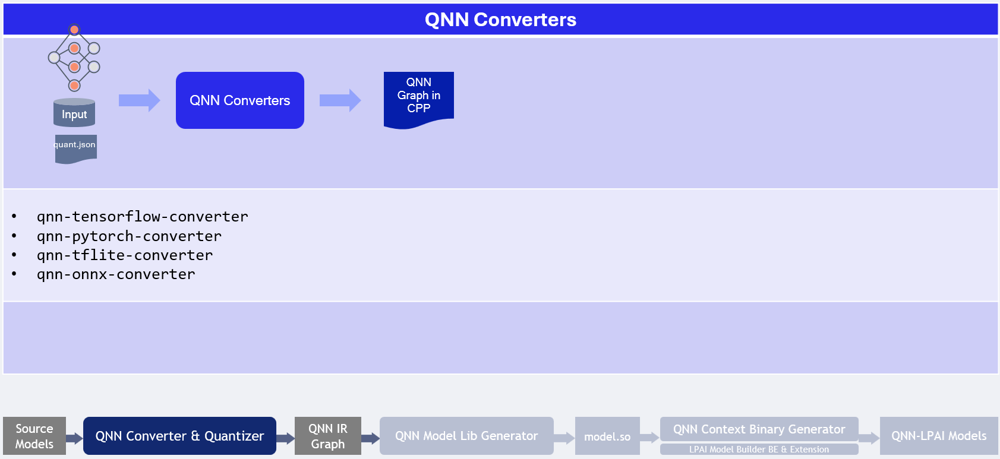

QNN LPAI Model Generation¶
Model generation relies on three existing QNN (not QAIRT) tools:
QNN Model converter Tool responsible for model conversion and quantization to QNN format refer to QNN Converters.
QNN Model Lib Generator responsible for model compilation to shared library format qnn-model-lib-generator.
QNN Context Binary Generator is used for offline model compilation qnn-context-binary-generator.
With the configuration file prepared, you can now generate the model offline. This step compiles the neural network into a format optimized for the target LPAI hardware.
Important
The LPAI backend requires quantized QNN models. Unquantized QNN models are not supported.
For supported operations and quantization requirements, refer to the Supported Operations.
Offline LPAI Model Generation illustrates the LPAI offline model generation.
Offline LPAI Model Generation

Quantization Method Comparison¶
Method |
Command Line |
Purpose |
Key Options & Descriptions |
|---|---|---|---|
CPU-Based Quantization |
|
Generate activation distribution and quantize tensors using CPU. |
|
JSON-Based Quantization (e.g., AIMET) |
|
Use external tool (e.g., AIMET) to define quantization via JSON overrides. |
|
Note
--use_dynamic_16_bit_weights is enabled by default when using --target_backend LPAI.
Recommendations¶
Scenario |
Recommended Workflow |
Rationale |
|---|---|---|
Quick prototyping or baseline quantization |
CPU-Based Quantization |
Fast setup with default options; no need for external tools. |
Fine-grained control over quantization behavior |
JSON-Based Quantization |
Allows detailed overrides via JSON (e.g., AIMET), ideal for achieving better quantization accuracy with advanced quantization algorithms. |
Working with pre-calibrated models or external calibration tools |
JSON-Based Quantization |
Integrates well with external calibration data and overrides. |
Quantization Tips¶
Use
--use_per_channel_quantizationfor convolution layers to improve accuracy.Use
--use_per_row_quantizationfor Matmul/FC layers to reduce quantization error.Prefer symmetric quantization for hardware-friendly deployment.
Use
--keep_weights_quantizedand--float_fallbackcombination to make sure quantization behavior specified in the quantization overrides is retained.
Preparing LPAI Param Config File¶
Prepare Json file with appropriate parameters to generate model for appropriate hardware
EXAMPLE of lpaiParams.conf file for v6 hardware:
{
"lpai_backend": {
"target_env": "x86",
"enable_hw_ver": "v6"
}
}
Compile LPAI Graph on x86 Linux OS¶
EXAMPLE of config.json file:
{
"backend_extensions": {
"shared_library_path": "${QNN_SDK_ROOT}/lib/x86_64-linux-clang/libQnnLpaiNetRunExtensions.so",
"config_file_path": "./lpaiParams.conf"
}
}
Use context binary generator to generate offline LPAI model.
The qnn-context-binary-generator utility is backend-agnostic, meaning it can only utilize generic QNN APIs. The backend extension feature allows for the use of backend-specific APIs, such as custom configurations. More documentation on context binary generator can be found under qnn-context-binary-generator Please note that the scope of QNN backend extensions is limited to qnn-context-binary-generator and qnn-net-run.
LPAI Backend Extensions serve as an interface to offer custom options to the LPAI Backend.
To enable hardware versions, it is necessary to provide an extension shared library
libQnnLpaiNetRunExtensions.so and a configuration file, if required.
To use backend extension-related parameters with qnn-net-run and qnn-context-binary-generator, use the --config_file argument and provide the path to the JSON file.
$ cd ${QNN_SDK_ROOT}/examples/QNN/converter/models
$ export LD_LIBRARY_PATH=$LD_LIBRARY_PATH:${QNN_SDK_ROOT}/lib/x86_64-linux-clang
$ ${QNN_SDK_ROOT}/bin/x86_64-linux-clang/qnn-context-binary-generator \
--backend <path_to_x86_library>/libQnnLpai.so \
--model <qnn_x86_model_name.so> \
--log_level verbose \
--binary_file <qnn_model_name.bin> \
--config_file <path to JSON of backend extensions>
To configure LPAI JSON configuration refer to `QNN LPAI Backend Configuration Guide`_
Compile LPAI Graph on x86 Windows OS¶
EXAMPLE of config.json file:
{
"backend_extensions": {
"shared_library_path": "${QNN_SDK_ROOT}/lib/x86_64-windows-msvc/QnnLpaiNetRunExtensions.dll",
"config_file_path": "./lpaiParams.conf"
}
}
Note
The lpaiParams.conf should be created in a manner similar to that used for Linux operating systems.
Use the context binary generator to generate an offline LPAI model. More documentation on the context binary generator can be found under qnn-context-binary-generator.
Generate the Context Binary:
cd ${QNN_SDK_ROOT}/examples/QNN/converter/models
$env:PATH=$PATH:"${QNN_SDK_ROOT}/lib/x86_64-windows-msvc:${QNN_SDK_ROOT}/bin/x86_64-windows-msvc"
qnn-context-binary-generator.exe `
--backend ${QNN_SDK_ROOT}/lib/x86_64-windows-msvc/QnnLpai.dll `
--model ${QNN_SDK_ROOT}/examples/Models/InceptionV3/model_libs/x86_64-windows-msvc/QnnModel.dll `
--config_file <config.json> `
--binary_file qnn_model_8bit_quantized.serialized